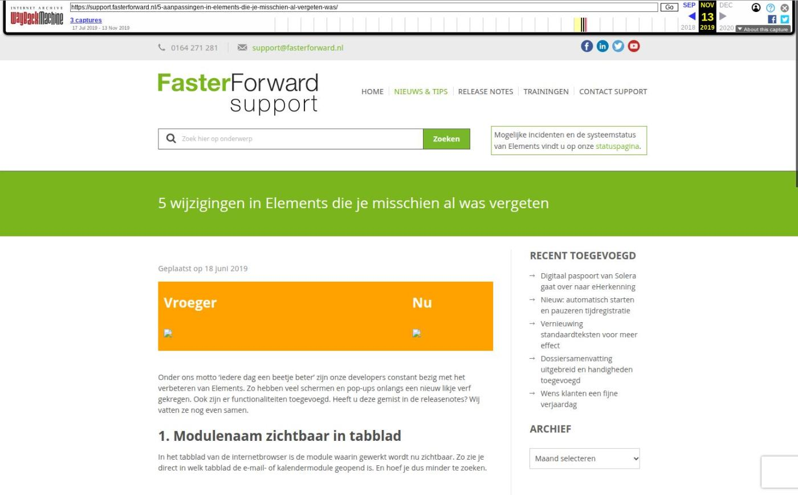

5 wijzigingen in Elements die je misschien al was vergeten

Tekstinhoud
Geplaatst op 18 juni 2019
Vroeger
Nu
Onder ons motto ‘iedere dag een beetje beter’ zijn onze developers constant bezig met het verbeteren van Elements. Zo hebben veel schermen en pop-ups onlangs een nieuw likje verf gekregen. Ook zijn er functionaliteiten toegevoegd. Heeft u deze gemist in de releasenotes? Wij vatten ze nog even samen.
1. Modulenaam zichtbaar in tabblad
In het tabblad van de internetbrowser is de module waarin gewerkt wordt nu zichtbaar. Zo zie je direct in welk tabblad de e-mail- of kalendermodule geopend is. En hoef je dus minder te zoeken.
2. Nieuwe maatschappijen en producten nu sneller te installeren
Productbeheerders kunnen nu eenvoudig nieuwe maatschappijen, artikelgroepen en producten installeren via een oranje knop op het dashboard. De knop ‘Update beschikbaar’ komt in beeld zodra er nieuwe maatschappijen of producten beschikbaar zijn.
Hierdoor hoef je producten niet langer met de hand op te voeren. De producten, maatschappijen en artikelgroepen worden namelijk met één klik geïnstalleerd.
Bekijk hier het bijbehorende kennisartikel
3. Schermen visueel aangepast
In het eerste half jaar van 2019 zijn er ook enorm veel schermen vernieuwd qua uiterlijk. Dit nieuwe uiterlijk zorgt ervoor dat Elements er frisser, rustiger en moderner uitziet.
Oud
Nieuw
De schermen met het ‘oude’ uiterlijk worden één voor één aangepast, zodat het uiterlijk uiteindelijk door heel Elements hetzelfde is.
4. Bankafschriften inlezen vernieuwd
Het inlezen van bankafschriften is vernieuwd. Het scherm ‘Bankafschrift importeren’ heeft ook een nieuw uiterlijk gekregen. Daarnaast is het transactieoverzicht uitgebreid met een drietal kolommen:
Type waarop is gematched;
Relatienaam van de gekoppelde transactie;
Of er een openstaande post gekoppeld is aan de transactie.
Bovendien is het inlezen van bankafschriften vereenvoudigd. Wanneer je een boekstuk aanmaakt, opent direct het scherm waar de aanvullingen plaatsvinden (zie onderstaand).
Lees hier hoe je een bankafschrift importeert
5. Aplaza inbox geüpdatet
Ook de inbox waarin de Aplaza-berichten binnenkomen is uitgebreid. Zo is direct duidelijk:
Wat voor type bericht het is;
Of het een documentbericht is;
Of het bericht al gematcht is;
Categorie: Algemeen